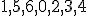
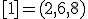
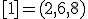
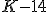
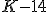
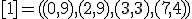
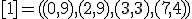
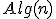

| Nr | Opcja | Punkty | Poprawna | Odpowied¼ |
|---|
| 1 | Rozwa¿my funkcje zmiennej . Które z poni¿szych zdañ jest prawdziwe? |
| | 0 | | |
| | 0 | | |
| Ci±g funkcji jest ci±giem ¶ci¶le malej±cym wzglêdem ich rzêdów | 1 | + | |
| 2 | Rozwa¿my drzewo  typu AVL powsta³e na skutek kolejnego wstawiania elementów ci±gu do pocz±tkowo pustej struktury (przy u¿yciu operacji INSERT). Które z poni¿szych zdañ jest prawdziwe? typu AVL powsta³e na skutek kolejnego wstawiania elementów ci±gu do pocz±tkowo pustej struktury (przy u¿yciu operacji INSERT). Które z poni¿szych zdañ jest prawdziwe? |
| Wysoko¶æ drzewa  jest równa dok³adnie jest równa dok³adnie  | 0 | | |
| £±czna liczba rotacji pojedynczych w lewo wykonanych w trakcie budowy drzewa  jest równa dok³adnie jest równa dok³adnie | 1 | + | |
| Liczba wierzcho³ków wewnêtrznych drzewa  jest równa dok³adnie jest równa dok³adnie  | 0 | | |
| 3 | Rozwa¿my nieskierowany graf prosty  , którego wierzcho³ki etykietowane s± liczbami naturalnymi od , którego wierzcho³ki etykietowane s± liczbami naturalnymi od  do do  w³±cznie, zadany tabic± list s±siedztwa postaci: , , , , , , i przedstawiony na poni¿szym rysunku. Wierzcho³ki grafu w³±cznie, zadany tabic± list s±siedztwa postaci: , , , , , , i przedstawiony na poni¿szym rysunku. Wierzcho³ki grafu  odwiedzamy w kolejno¶ci BFS z wierzcho³ka startowego odwiedzamy w kolejno¶ci BFS z wierzcho³ka startowego  .
Które z poni¿szych zdañ jest prawdziwe? Uwaga! W algorytmie BFS
wierzcho³ki grafu umieszczamy w kolejce pomocniczej w kolejno¶ci
rosn±cych warto¶ci etykiet. .
Które z poni¿szych zdañ jest prawdziwe? Uwaga! W algorytmie BFS
wierzcho³ki grafu umieszczamy w kolejce pomocniczej w kolejno¶ci
rosn±cych warto¶ci etykiet. |
| Kolejno¶æ odwiedzenia wierzcho³ków jest nastêpuj±ca:  | 1 | + | |
| Liczba operacji OUT w kolejce pomocniczej w trakcie wykonania algorytmu BFS jest równa dok³adnie  | 1 | + | |
| Maksymalna d³ugo¶æ kolejki pomocniczej w trakcie wykonania algorytmu BFS jest równa dok³adnie  | 1 | + | |
| 4 | Rozwa¿my drzewo  typu BST powsta³e na skutek kolejnego wstawiania elementów ci±gu do pocz±tkowo pustej struktury (przy u¿yciu operacji INSERT). Nastêpnie z drzewa typu BST powsta³e na skutek kolejnego wstawiania elementów ci±gu do pocz±tkowo pustej struktury (przy u¿yciu operacji INSERT). Nastêpnie z drzewa  usuwamy wierzcho³ki z etykietami .
Które z poni¿szych zdañ jest prawdziwe?. Uwaga! W razie konieczno¶ci w
operacji DELETE w miejsce usuwanego wierzcho³ka wstawiamy wierzcho³ek
bezpo¶rednio poprzedni (drzewo ) albo nastêpny (drzewo ) wzglêdem porz±dku etykiet. usuwamy wierzcho³ki z etykietami .
Które z poni¿szych zdañ jest prawdziwe?. Uwaga! W razie konieczno¶ci w
operacji DELETE w miejsce usuwanego wierzcho³ka wstawiamy wierzcho³ek
bezpo¶rednio poprzedni (drzewo ) albo nastêpny (drzewo ) wzglêdem porz±dku etykiet. |
| Wysoko¶æ drzewa  jest równa dok³adnie jest równa dok³adnie | 1 | + | |
| Liczba wierzcho³ków zewnêtrznych drzewa  jest równa dok³adnie jest równa dok³adnie  | 0 | | |
| Etykiety wierzcho³ków drzewa  wypisane w kolejno¶ci PostOrder tworz± ci±g: wypisane w kolejno¶ci PostOrder tworz± ci±g: | 1 | + | |
| 5 | Rozwa¿my pe³ne drzewo binarne  wysoko¶ci wysoko¶ci  . Które z poni¿szych zdañ jest prawdziwe? . Które z poni¿szych zdañ jest prawdziwe? |
| Je¿eli wierzcho³ki drzewa  w kolejno¶ci InOrder tworz± ci±g w kolejno¶ci InOrder tworz± ci±g  , to w kolejno¶ci PreOrder tworz± ci±g: , to w kolejno¶ci PreOrder tworz± ci±g: | 1 | + | |
| Je¿eli wierzcho³ki drzewa  w kolejno¶ci PreOrder tworz± ci±g w kolejno¶ci PreOrder tworz± ci±g  , to w kolejno¶ci InOrder tworz± ci±g: , to w kolejno¶ci InOrder tworz± ci±g: | 0 | | |
| Je¿eli wierzcho³ki drzewa  w kolejno¶ci PostOrder tworz± ci±g , to w kolejno¶ci InOrder tworz± ci±g: w kolejno¶ci PostOrder tworz± ci±g , to w kolejno¶ci InOrder tworz± ci±g: | 1 | + | |
| 6 | Rozwa¿my nieskierowany graf prosty  , którego wierzcho³ki etykietowane s± liczbami naturalnymi od , którego wierzcho³ki etykietowane s± liczbami naturalnymi od  do w³±cznie, zadany tabic± list s±siedztwa postaci: , , , , , , , , , i przedstawiony na poni¿szym rysunku. Dla grafu do w³±cznie, zadany tabic± list s±siedztwa postaci: , , , , , , , , , i przedstawiony na poni¿szym rysunku. Dla grafu  stosujemy algorytm kolorowania LF (largest first). Które z poni¿szych
zdañ jest prawdziwe? Uwaga! W przypadku niejednoznacznej mo¿liwo¶ci
wyboru wierzcho³ków, jako pierwszy wybieramy wierzcho³ek z mniejsz±
etykiet±. Kolory indeksujemy od
stosujemy algorytm kolorowania LF (largest first). Które z poni¿szych
zdañ jest prawdziwe? Uwaga! W przypadku niejednoznacznej mo¿liwo¶ci
wyboru wierzcho³ków, jako pierwszy wybieramy wierzcho³ek z mniejsz±
etykiet±. Kolory indeksujemy od  . . |
| Liczba chromatyczna  grafu grafu  jest równa dok³adnie jest równa dok³adnie | 0 | | |
| Liczba chromatyczna grafu  jest równa dok³adnie jest równa dok³adnie  | 0 | | |
| Po zastosowaniu algorytm LF wierzcho³ek  ma przypisany taki sam kolor jak wierzcho³ek ma przypisany taki sam kolor jak wierzcho³ek  | 1 | + | |
| 7 | Rozwa¿my
wykonanie algorytmu obliczania warto¶ci poprawnie i w pe³ni
nawiasowanego wyra¿enia arytmetycznego, przy u¿yciu dwóch stosów: stosu
argumentów i stosu operatorów. Wyra¿enie wej¶ciowe ma postaæ . Które z poni¿szych zdañ jest prawdziwe? |
| Liczba operacji POP na stosie argumentów w trakcie wykonania algorytmu jest równa dok³adnie | 1 | + | |
| Liczba operacji PUSH na stosie argumentów w trakcie wykonania algorytmu jest równa dok³adnie  | 0 | | |
| Liczba operacji POP na stosie argumentów w trakcie wykonania algorytmu jest równa dok³adnie  | 0 | | |
| 8 | Rozwa¿my kopiec binarny  typu min zaimplementowany w drzewie binarnym. Kopiec typu min zaimplementowany w drzewie binarnym. Kopiec  konstruujemy z elementów ci±gu stosuj±c szybki algorytm budowy kopca HeapConstruct. Które z poni¿szych zdañ jest prawdziwe? konstruujemy z elementów ci±gu stosuj±c szybki algorytm budowy kopca HeapConstruct. Które z poni¿szych zdañ jest prawdziwe? |
| Wysoko¶æ drzewa-kopca  jest równa dok³adnie jest równa dok³adnie  | 0 | | |
| Liczba operacji przestawieñ elementów kopca wykonanych w trakcie jego budowy jest równa co najwy¿ej  | 1 | + | |
| Etykiety wierzcho³ków drzewa-kopca  wypisane w kolejno¶ci PostOrder tworz± ci±g: wypisane w kolejno¶ci PostOrder tworz± ci±g: | 0 | | |
| 9 | Rozwa¿my drzewo kodowe Huffmana  powsta³e na skutek zastosowania algorytmu budowy drzewa kodu Huffmana
dla ci±gu znaków zawieraj±cego odpowiednio (znak - krotno¶æ wyst±pieñ):
, , , , , ,
powsta³e na skutek zastosowania algorytmu budowy drzewa kodu Huffmana
dla ci±gu znaków zawieraj±cego odpowiednio (znak - krotno¶æ wyst±pieñ):
, , , , , ,  , .
Które z poni¿szych zdañ jest prawdziwe? Uwaga! W przypadku
niejednoznacznego wyboru poddrzew, za mniejsze uznajemy to, którego
etykiet li¶ci czytane od lewej do prawej strony tworz± s³owo mniejsze w
sensie porz±dku leksykograficznego. , .
Które z poni¿szych zdañ jest prawdziwe? Uwaga! W przypadku
niejednoznacznego wyboru poddrzew, za mniejsze uznajemy to, którego
etykiet li¶ci czytane od lewej do prawej strony tworz± s³owo mniejsze w
sensie porz±dku leksykograficznego. |
| Wysoko¶æ drzewa jest równa dok³adnie | 0 | | |
| Wysoko¶æ drzewa  jest równa dok³adnie jest równa dok³adnie | 0 | | |
| Kod litery  odczytany z drzewa odczytany z drzewa  jest nastêpuj±cy: jest nastêpuj±cy:  | 1 | + | |
| 10 | Rozwa¿my tablicê  reprezentuj±c± reprezentuj±c±  -elementowy ci±g ró¿nych liczb naturalnych: -elementowy ci±g ró¿nych liczb naturalnych:  . W owej tablicy wyszukujemy indeksu elementu -go
co do wielko¶ci za pomoc± algorytmu Hoare'a z procedur± podzia³u zgodn±
z metod± Partition. Które z poni¿szych zdañ jest prawdziwe? . W owej tablicy wyszukujemy indeksu elementu -go
co do wielko¶ci za pomoc± algorytmu Hoare'a z procedur± podzia³u zgodn±
z metod± Partition. Które z poni¿szych zdañ jest prawdziwe? |
| W rozwa¿anym przypadku liczba wykonanañ algorytmu Partition jest równa dok³adnie | 1 | + | |
| W
rozwa¿anym przypadku liczba wykonanañ algorytmu Partition jest wiêksza
od liczby wykonañ tego algorytmu, gdy zamiast indeksu elementu  -go co do wielko¶ci bêdziemy wyszukiwali indeksu elementu -go co do wielko¶ci bêdziemy wyszukiwali indeksu elementu  -go co do wielko¶ci -go co do wielko¶ci | 1 | + | |
| Argumentem  -go wykonania algorytmu Partition jest tablica postaci: , w której szukamy indeksu elementu -go wykonania algorytmu Partition jest tablica postaci: , w której szukamy indeksu elementu  -go co do wielko¶ci -go co do wielko¶ci | 0 | | |
| 11 | Rozwa¿my nieskierowany graf prosty  z wagami, którego wierzcho³ki etykietowane s± liczbami naturalnymi od z wagami, którego wierzcho³ki etykietowane s± liczbami naturalnymi od  do do  w³±cznie, zadany tabic± list s±siedztwa postaci: , , w³±cznie, zadany tabic± list s±siedztwa postaci: , ,  , , , ,  , ,  , , i przedstawiony na poni¿szym rysunku. Dla grafu , , i przedstawiony na poni¿szym rysunku. Dla grafu  stosujemy algorytm Kruskala wyznaczenia minimalnego drzewa
rozpinaj±cego. Które z poni¿szych zdañ jest prawdziwe? Uwaga! W
przypadku niejednoznacznej mo¿liwo¶ci wyboru krawêdzi, jako pierwsz±
wybieramy krawêd¼, której etykiety wierzcho³ków krañcowych w kolejno¶ci
niemalej±cej tworz± mniejsz± liczbê naturaln±.
stosujemy algorytm Kruskala wyznaczenia minimalnego drzewa
rozpinaj±cego. Które z poni¿szych zdañ jest prawdziwe? Uwaga! W
przypadku niejednoznacznej mo¿liwo¶ci wyboru krawêdzi, jako pierwsz±
wybieramy krawêd¼, której etykiety wierzcho³ków krañcowych w kolejno¶ci
niemalej±cej tworz± mniejsz± liczbê naturaln±. |
| Kolejno¶æ akceptowania krawêdzi grafu do drzewa rozpinaj±cego w trakcie wykonania rozwa¿anego algorytmu jest nastêpuj±ca: | 0 | | |
| Maksymalna waga krawêdzi tworz±cej otrzymane drzewo rozpinaj±ce grafu  jest równa co najmniej jest równa co najmniej  | 0 | | |
| Liczba
krawêdzi grafu odrzuconych (ze wzglêdu na mo¿liwo¶æ utworzenia cyklu) w
trakcie konstrukcji drzewa rozpinaj±cego, jeszcze przed ustaleniem jego
finalnej postaci, jest równa dok³adnie  | 1 | + | |
| 12 | Rozwa¿my tablicê  indeksowan± od indeksowan± od  reprezentuj±c± -elementowy czê¶ciowo uporz±dkowany ci±g liczb naturalnych: . Do ca³kowitego uporz±dkowania elementów owej tablicy stosujemy algorytm Merge. Które z poni¿szych zdañ jest prawdziwe? reprezentuj±c± -elementowy czê¶ciowo uporz±dkowany ci±g liczb naturalnych: . Do ca³kowitego uporz±dkowania elementów owej tablicy stosujemy algorytm Merge. Które z poni¿szych zdañ jest prawdziwe? |
| Elementy tablicy  , które w algorytmie Merge s± argumentami ostatniej operacji porównania elmentów, to kolejno oraz , które w algorytmie Merge s± argumentami ostatniej operacji porównania elmentów, to kolejno oraz  | 0 | | |
| Elementy tablicy  , które w algorytmie Merge s± argumentami ostatniej operacji porównania elmentów, to kolejno , które w algorytmie Merge s± argumentami ostatniej operacji porównania elmentów, to kolejno  oraz oraz | 1 | + | |
| Elementy tablicy  , które w algorytmie Merge nie s± argumentami ostatniej operacji porównania elmentów, to kolejno , które w algorytmie Merge nie s± argumentami ostatniej operacji porównania elmentów, to kolejno  oraz oraz  | 0 | | |
| 13 | Rozwa¿my nieskierowany graf prosty  z wagami, którego wierzcho³ki etykietowane s± liczbami naturalnymi od z wagami, którego wierzcho³ki etykietowane s± liczbami naturalnymi od  do do  w³±cznie, zadany tabic± list s±siedztwa postaci: , , , , , , , i przedstawiony na poni¿szym rysunku. Dla grafu w³±cznie, zadany tabic± list s±siedztwa postaci: , , , , , , , i przedstawiony na poni¿szym rysunku. Dla grafu  i wierzcho³ka startowego i wierzcho³ka startowego  stosujemy stosujemy algorytm Prima wyznaczenia minimalnego drzewa
rozpinaj±cego. Które z poni¿szych zdañ jest prawdziwe? Uwaga! W
przypadku niejednoznacznej mo¿liwo¶ci wyboru wierzcho³ków, jako
pierwszy wybieramy wierzcho³ek z mniejsz± etykiet±.
stosujemy stosujemy algorytm Prima wyznaczenia minimalnego drzewa
rozpinaj±cego. Które z poni¿szych zdañ jest prawdziwe? Uwaga! W
przypadku niejednoznacznej mo¿liwo¶ci wyboru wierzcho³ków, jako
pierwszy wybieramy wierzcho³ek z mniejsz± etykiet±. |
| Kolejno¶æ przy³±czania wierzcho³ków do minimalnego drzewa rozpinaj±cego grafu  w trakcie wykonania algorytmu Prima jest nastêpuj±ca: w trakcie wykonania algorytmu Prima jest nastêpuj±ca: | 0 | | |
| Suma wag krawêdzi tworz±cych minimalne drzewo rozpinaj±ce bêd±ce rezultatem dzia³ania algorytmu Prima jest równa dok³adnie  | 0 | | |
| Suma wag krawêdzi tworz±cych minimalne drzewo rozpinaj±ce bêd±ce rezultatem dzia³ania algorytmu Prima jest równa dok³adnie | 1 | + | |
| 14 | Rozwa¿my tablicê  reprezentuj±c± reprezentuj±c±  -elementowy ci±g -elementowy ci±g  -cyfrowych liczb naturalnych: .
Do posortowania owej tablicy stosujemy algorytm RadixSort
zaimplementowany przy u¿yciu kolejek. Które z poni¿szych zdañ jest
prawdziwe? -cyfrowych liczb naturalnych: .
Do posortowania owej tablicy stosujemy algorytm RadixSort
zaimplementowany przy u¿yciu kolejek. Które z poni¿szych zdañ jest
prawdziwe? |
| £±czna liczba operacji IN we wszystkich kolejkach w trakcie wykonania rozwa¿anego algorytmu jest równa dok³adnie | 0 | | |
| Tu¿ po sortowaniu liczb wzglêdem cyfr na  -ej pozycji dziesiêtnej (liczonej od prawej do lewej strony), zawarto¶æ tablicy jest nastêpuj±ca: -ej pozycji dziesiêtnej (liczonej od prawej do lewej strony), zawarto¶æ tablicy jest nastêpuj±ca: | 0 | | |
| Tu¿ po sortowaniu liczb wzglêdem cyfr na  -ej pozycji dziesiêtnej (liczonej od prawej do lewej strony), zawarto¶æ tablicy -ej pozycji dziesiêtnej (liczonej od prawej do lewej strony), zawarto¶æ tablicy  jest nastêpuj±ca: jest nastêpuj±ca: | 1 | + | |
| 15 | Rozwa¿my pocz±tkowo pust± strukturê stosu  , do której wstawiono elementy: . Nastêpnie na strukturze wykonano kolejno ci±g operacji: , , , do której wstawiono elementy: . Nastêpnie na strukturze wykonano kolejno ci±g operacji: , ,  , ,  , , , ,  , ,  , ,  . Które z poni¿szych zdañ jest prawdziwe? . Które z poni¿szych zdañ jest prawdziwe? |
| Maksymalna wysoko¶æ stosu  w trakcie wykonania przedstawionego ci±gu operacji jest taka sama jak w przypadku wykonania nastêpuj±cego ci±gu operacji: w trakcie wykonania przedstawionego ci±gu operacji jest taka sama jak w przypadku wykonania nastêpuj±cego ci±gu operacji:  , ,  , ,  , , , , , ,  , ,  , , | 1 | + | |
| Ostateczna wysoko¶æ stosu  tu¿ po wykonaniu przedstawionego ci±gu operacji jest taka sama jak w przypadku wykonania nastêpuj±cego ci±gu operacji: , tu¿ po wykonaniu przedstawionego ci±gu operacji jest taka sama jak w przypadku wykonania nastêpuj±cego ci±gu operacji: ,  , ,  , , , , , ,  , ,  , , | 0 | | |
| Ostateczna wysoko¶æ stosu  tu¿ po wykonaniu przedstawionego ci±gu operacji jest równa dok³adnie tu¿ po wykonaniu przedstawionego ci±gu operacji jest równa dok³adnie  | 0 | | |
| 16 | Rozwa¿my algorytm , gdzie jest typem danych reprezentuj±cym podzbiory zbioru - set A:=;
- int i:=0;
- while (i < n) do
- A:=A{i};
- i:=i+1;
- od
- return A;
Które z nastêpuj±cych zdañ jest prawdziwe? |
| Je¿eli  jest liczb± naturaln± wiêksz± od zera, to po wykonaniu algorymu spe³nione s± warunki oraz jest liczb± naturaln± wiêksz± od zera, to po wykonaniu algorymu spe³nione s± warunki oraz | 0 | | |
| Niezmiennikiem pêtli w algorytmie jest formu³a | 0 | | |
| Niezmiennikiem pêtli w algorytmie  jest formu³a jest formu³a | 1 | + | |
| 17 | Koszt algorytmu Partition, zastosowanego do ci±gu o  elementach jest: elementach jest: |
|  , je¿eli operacj± dominuj±c± jest porównanie elementów , je¿eli operacj± dominuj±c± jest porównanie elementów | 1 | + | |
| , je¿eli operacj± dominuj±c± jest porównanie elementów | 1 | + | |
| Rzêdu  , je¿eli operacj± dominuj±c± jest przestawienie elementów , je¿eli operacj± dominuj±c± jest przestawienie elementów | 0 | | |
| 18 | Które z wymienionych zdañ jest prawdziwe? |
| D³ugo¶æ dowolnej drogi od korzenia do li¶cia w drzewie decyzyjnym dla algorytmu sortowania przez wybór zastosowanego do ci±gu  elementowego wynosi co najwy¿ej elementowego wynosi co najwy¿ej  | 0 | | |
| Algorytm InsertionSort, zastosowany do ci±gu uporz±dkowanego o elementach, wykonuje tylko przestawieñ | 1 | + | |
| Algorytm InsertionSort wykonuje dla ci±gu odwrotnie uporz±dkowanego asymptotycznie mniej porównañ ni¿ algorytm SelectionSort | 0 | | |
| 19 | Niech  bêdzie drzewem BST powsta³ym przez kolejne wstawianie wierzcho³ków o etykietach do pocz±tkowo pustej struktury. Które z ponizszych zdañ jest prawdziwe? bêdzie drzewem BST powsta³ym przez kolejne wstawianie wierzcho³ków o etykietach do pocz±tkowo pustej struktury. Które z ponizszych zdañ jest prawdziwe? |
| Usuniêcie wierzcho³ka z etykiet±  w drzewie w drzewie  prowadzi do drzewa, w którym w miejscu wierzcho³ka z etykiet± prowadzi do drzewa, w którym w miejscu wierzcho³ka z etykiet±  znajdzie siê wierzcho³ek z etykiet± znajdzie siê wierzcho³ek z etykiet±  albo albo  | 1 | + | |
| Usuniêcie wierzcho³ka z etykiet±  w drzewie w drzewie  prowadzi do drzewa, którego korzeniem bêdzie wierzcho³ek z etykiet± prowadzi do drzewa, którego korzeniem bêdzie wierzcho³ek z etykiet±  | 1 | + | |
| Wysoko¶æ drzewa  jest niezale¿na od kolejno¶ci wstawiania rozwa¿anych wierzcho³ków jest niezale¿na od kolejno¶ci wstawiania rozwa¿anych wierzcho³ków | 0 | | |
| 20 | Niech  bêdzie kopcem-drzewem o wierzcho³kach i niech bêdzie liczb± jego li¶ci na ostatnim poziomie. Zaznacz zdania prawdziwe. bêdzie kopcem-drzewem o wierzcho³kach i niech bêdzie liczb± jego li¶ci na ostatnim poziomie. Zaznacz zdania prawdziwe. |
| Je¶li , dla pewnego , to | 0 | | |
| Je¶li , to | 0 | | |
| Je¶li , to | 1 | + | |